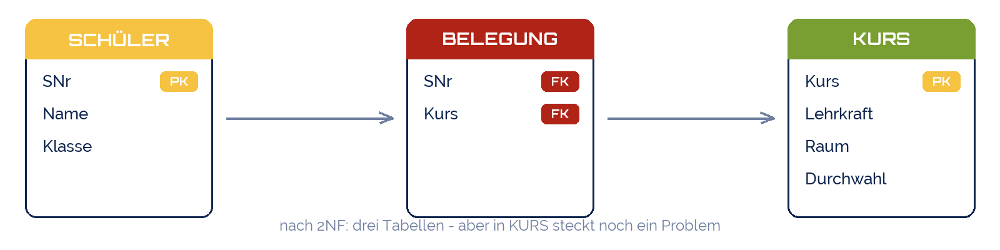
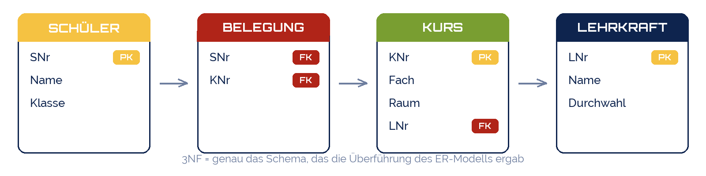

RyanK14
RyanK14
Good morning!
Nur das Schöne wird die Welt retten!
Fjodor Dostojewski
Nicht verzagen, Doc Alvers fragen!
Informatik — FOS 12
Normalisierung
Redundanz systematisch loswerden: 1., 2. und 3. Normalform
Nicht verzagen, Doc Alvers fragen!
Kapitel 01
Warum Normalformen?
Ein Prüfverfahren, das die Anomalien aus Woche 3 verhindert
Nicht verzagen, Doc Alvers fragen!
Vom Bauchgefühl zur Regel
Woche 3: die Kursliste war schlecht — wir haben es gesehen, aber nicht bewiesen
Normalformen sind Tests: besteht eine Tabelle den Test, ist diese Art Redundanz weg
Drei Stufen, immer in dieser Reihenfolge: 1NF → 2NF → 3NF
Ein sauberes ER-Modell liefert meist schon 3NF — Normalisierung ist das Sicherheitsnetz
Das Werkzeug dahinter: Abhängigkeit — welcher Wert legt welchen anderen fest?
Nicht verzagen, Doc Alvers fragen!
Ausgangspunkt: noch schlimmer als die Kursliste
| SNr | Name | Klasse | Kurse | Lehrkräfte | Räume | Durchwahl |
|---|---|---|---|---|---|---|
| 1001 | Lena Krause | FO12a | Informatik, Physik | Alvers, Schulze | 204, 305 | 31, 42 |
| 1002 | Tim Vogel | FO12a | Informatik, Physik | Alvers, Schulze | 204, 305 | 31, 42 |
| 1003 | Mia Hahn | FO12b | Informatik | Alvers | 204 | 31 |
| 1004 | Ben Roth | FO12b | Mathematik | Berger | 118 | 27 |
Eine Zeile pro Schüler — bequem zum Tippen, unbrauchbar zum Fragen
„Wer ist in Physik?“ → das DBMS müsste Listen in Zellen durchsuchen
Welche Durchwahl gehört zu welcher Lehrkraft? Nur die Reihenfolge verrät es
Nicht verzagen, Doc Alvers fragen!
Kapitel 02
1. Normalform
Jede Zelle enthält genau einen Wert
Nicht verzagen, Doc Alvers fragen!
1NF: Listen auflösen — eine Zeile pro Wert
| SNr | Name | Klasse | Kurs | Lehrkraft | Raum | Durchwahl |
|---|---|---|---|---|---|---|
| 1001 | Lena Krause | FO12a | Informatik | Alvers | 204 | 31 |
| 1001 | Lena Krause | FO12a | Physik | Schulze | 305 | 42 |
| 1002 | Tim Vogel | FO12a | Informatik | Alvers | 204 | 31 |
| 1002 | Tim Vogel | FO12a | Physik | Schulze | 305 | 42 |
| 1003 | Mia Hahn | FO12b | Informatik | Alvers | 204 | 31 |
| 1004 | Ben Roth | FO12b | Mathematik | Berger | 118 | 27 |
1NF: jede Zelle ein Wert — keine Listen, keine Wiederholungsgruppen
Dafür wiederholen sich Zeilen: das ist die Kursliste aus Woche 3
Jetzt braucht die Tabelle einen Schlüssel: SNr allein reicht nicht mehr → (SNr, Kurs)
Nicht verzagen, Doc Alvers fragen!
Kapitel 03
2. Normalform
Jedes Attribut hängt vom ganzen Schlüssel ab — nicht von einem Teil
Nicht verzagen, Doc Alvers fragen!
2NF: Wovon hängt jede Spalte ab?
| Spalte | hängt ab von | vom ganzen Schlüssel (SNr, Kurs)? | gehört in Tabelle |
|---|---|---|---|
| Name | SNr | nein — nur von SNr | Schüler |
| Klasse | SNr | nein — nur von SNr | Schüler |
| Lehrkraft | Kurs | nein — nur von Kurs | Kurs |
| Raum | Kurs | nein — nur von Kurs | Kurs |
| Durchwahl | Kurs (über Lehrkraft) | nein — nur von Kurs | Kurs (vorerst) |
| — | (SNr, Kurs) | das Paar selbst | Belegung |
Frage je Spalte: Brauche ich beide Schlüsselteile, um den Wert zu kennen?
Nein → Teilabhängigkeit → die Spalte wandert zu ihrem Schlüsselteil in eine eigene Tabelle
Übrig bleibt die reine Zuordnung Belegung(SNr, Kurs)
Nicht verzagen, Doc Alvers fragen!
Nach der 2. Normalform
Name und Klasse stehen jetzt einmal pro Schüler, Lehrkraft und Raum einmal pro Kurs
Die Änderungsanomalie „Raum 210“ ist damit erledigt
Aber: Durchwahl wiederholt sich, wenn Alvers mehrere Kurse hat — warum?

Nicht verzagen, Doc Alvers fragen!
Kapitel 04
3. Normalform
Kein Attribut hängt von einem anderen Nicht-Schlüssel-Attribut ab
Nicht verzagen, Doc Alvers fragen!
3NF: die versteckte Abhängigkeit
Durchwahl hängt von Lehrkraft ab — und Lehrkraft vom Kurs: eine Kette
Fachwort: transitive Abhängigkeit (Kurs → Lehrkraft → Durchwahl)
Lösung: Lehrkraft bekommt eine eigene Tabelle, Kurs behält nur den Fremdschlüssel
Test: „Hängt eine Spalte von einer anderen Nicht-Schlüssel-Spalte ab?“ → raus damit
| Kurs | Lehrkraft | Raum | Durchwahl |
|---|---|---|---|
| Informatik | Alvers | 204 | 31 |
| Physik | Schulze | 305 | 42 |
| Mathematik | Berger | 118 | 27 |
| Chemie | Alvers | 118 | 31 |
Nicht verzagen, Doc Alvers fragen!
Nach der 3. Normalform: bekannt?
Vier Tabellen — dieselben wie aus dem ER-Modell in Woche 7
Zwei Wege, ein Ziel: modellieren (ER) oder zerlegen (Normalisierung)
In der Praxis beides: erst modellieren, dann mit den Normalformen prüfen

Nicht verzagen, Doc Alvers fragen!
Die drei Normalformen im Überblick
| Normalform | Regel | Testfrage | Verstoß sieht so aus |
|---|---|---|---|
| 1NF | jede Zelle genau ein Wert | Steht irgendwo eine Liste? | „Informatik, Physik“ in einer Zelle |
| 2NF | alles hängt vom ganzen Schlüssel ab | Reicht ein Teil des Schlüssels? | Name hängt nur von SNr ab |
| 3NF | nichts hängt von Nicht-Schlüsseln ab | Hängt eine Spalte von einer anderen ab? | Durchwahl hängt von Lehrkraft ab |
Jede Stufe setzt die vorige voraus: erst 1NF, dann 2NF, dann 3NF
Merkhilfe von Bill Kent: „der Schlüssel, der ganze Schlüssel und nichts als der Schlüssel“
2NF ist nur ein Thema bei zusammengesetzten Schlüsseln
Nicht verzagen, Doc Alvers fragen!
Prüfrezept in fünf Schritten
Listen in Zellen? Auflösen, eine Zeile pro Wert → 1NF
Schlüssel bestimmen: welche Spalten machen eine Zeile eindeutig?
Teilabhängigkeit? Spalten, die nur an einem Schlüsselteil hängen, auslagern → 2NF
Kette? Spalten, die an einer anderen Nicht-Schlüssel-Spalte hängen, auslagern → 3NF
Probe: steht jede Information genau einmal? Fremdschlüssel eintragen, fertig
Nicht verzagen, Doc Alvers fragen!
Fun Facts: Normalformen
Edgar F. Codd definierte 1NF bis 3NF 1970/71 — im selben Aufsatz wie das relationale Modell
Es gibt weiter: BCNF, 4NF, 5NF, 6NF — im Alltag reicht die 3NF fast immer
Bill Kents Merkspruch endet mit „… so help me Codd“ — ein Wortspiel auf den Eid
Denormalisierung: Data Warehouses brechen die Regeln absichtlich, für Geschwindigkeit
Nicht verzagen, Doc Alvers fragen!
Der Schlüssel, der ganze Schlüssel und nichts als der Schlüssel.
Bill Kent, 1983
Nicht verzagen, Doc Alvers fragen!
Eure Aufgabe: die Pizzeria-Tabelle normalisieren
Tabelle Bestellungen: BestNr, Datum, Kunde, Adresse, Pizzen, Preise, Fahrer, Fahrer-Handy
1NF herstellen: eine Zeile pro Pizza — und den Schlüssel bestimmen
2NF: Welche Spalten hängen nur an BestNr, welche nur an der Pizza?
3NF: Wovon hängt das Fahrer-Handy ab? Wovon der Preis?
Vergleicht das Ergebnis mit eurem ER-Modell — stimmen die Tabellen überein?
Nicht verzagen, Doc Alvers fragen!